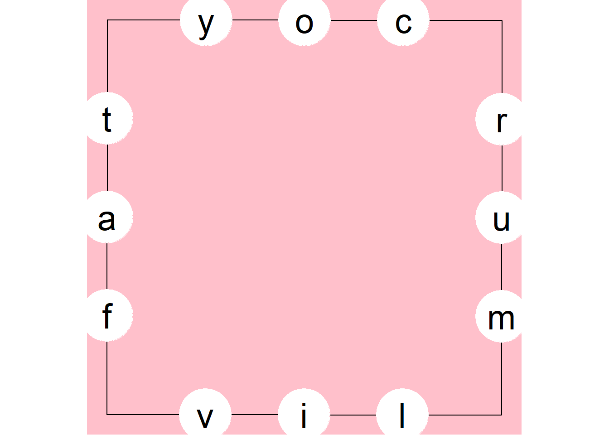
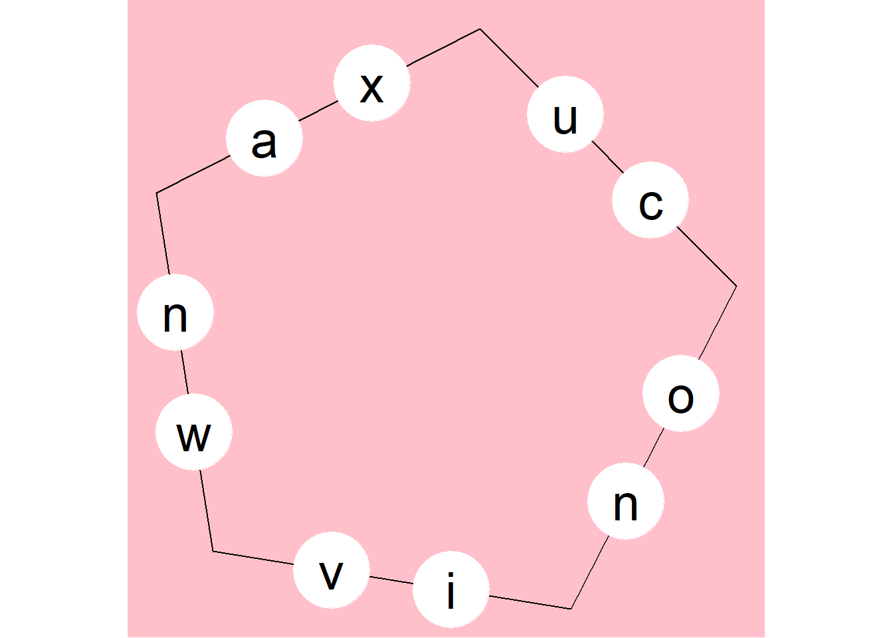
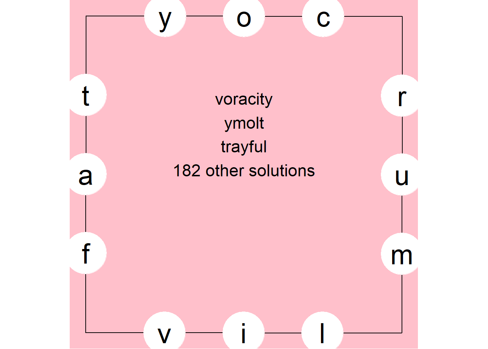
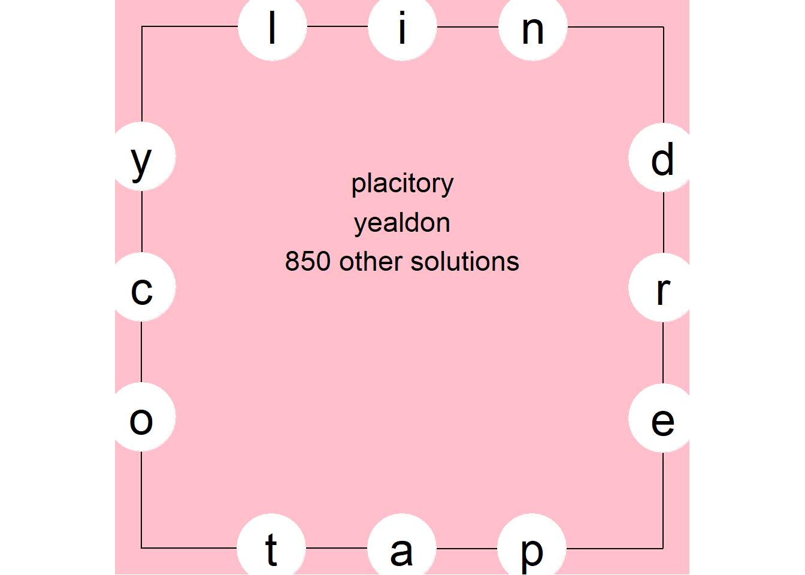

Solving the Letterboxed Puzzle in the New York Times
What is the difference between “computer programming” and “data science?” To someone not invovled in either they look much the same. Most data scientists are also coders, though they don’t need to be. Data scientists (especially amateurs like me) don’t need to be concerned with pointers, stacks, heaps, recursion, etc., but this is not a data science post.
For this post, I go back to my roots in the 1980s as an amateur computer scientist to solve a new New York Times puzzle called “Letterboxed.” In particular I employ recursion to build a tree of possible solutions. This exercise reminded me how languages like R allow such easy plug-ins to high-powered algorithms written by “real” computer scientists in “real” languages like C++. Data scientists stand on the shoulders of giants who wrote the low-level code.
I’ll confess, I don’t like playing games and doing puzzles much. I also take the fun out of it for other people. When someone gave my kids “Cards Against Humanity” as a gift, I went through the deck and removed all the really filthy cards (the kids were relieved to see I left in plenty of poop references). When I see a puzzle I immediately think about an algorithm to play or solve it.

Sample board from The Times
In “Letterboxed” the object is to string words together that use all the letters in the square using as few words as possible by tracing the spelling of each word in the square. You must start each new word with the last letter of the previous word and you may not use any consecutive letters that lie on the same side of the square. In the example above, “NIL” and “LAP” would not be permitted. “TORN” followed by “NEAR” would be fine.
Today we will forsake the usual data science workflow of: ask a question, source data, clean data, explore data and, finally, analyze data. Those proceed in a linear (in practice, circular) fashion but here we’ll go over the functions that do specific subroutines to generate and solve these puzzles.
The steps we’ll take are
- Generate the puzzle with random letters.
- Draw the board.
- Solve the puzzle.
- Print the answer that solves the puzzle in the fewest words.
Generating the puzzle is the easy part.
The first task is to generate the puzzle with random letters. It would be cruel to place no requirement to use vowels so we also specify a minimum number of vowels. We sample the required number of consonants and vowels and assign them to each segment of the polygon. The default is four sides with two consonants and one vowel per side.
Just to be cute, let’s write the function so we can optionally expand the geometry of the puzzle to an arbitrary number of sides and number of letters per side, not just a square as we see in The Times.
If you are playing along at home, delete the set.seed() line in the code below after you have established you get the same results I do or you will get the same puzzle every time you call generate_puzzle.
# letterboxed game
library(tidyverse)
library(wfindr)
library(gtools)
sides <- 4
letters_per_side <- 3
vowels <- c("a","e","i","o","u")
consonants <- letters[!(letters %in% vowels)]
# scrabble dictionary from wfinder. You can subsitute any list
# you desire, in any language.
word_list <- words.eng
# ------------------------------------------------------------
generate_puzzle <- function(sides=4,letters_per_side=3,
vowel_count=4,replacement = FALSE){
set.seed(1234567) # DELETE THIS LINE OR YOU WILL GET THE SAME PUZZLE EVERY TIME
if(sides < 4){
print("Minimum Side is 4, changing to 4")
sides = 4
}
if (vowel_count < sides) replacement=TRUE
if (vowel_count > length(vowels)) replacement=TRUE
use_vowels <- sample(vowels,vowel_count,replace = replacement)
use_consonants <- sample(consonants,letters_per_side*sides-vowel_count,replace = replacement)
# deal out the letters
letter = NULL
vowels_used = 1
consonants_used = 1
spot = 1
for (i in 1:letters_per_side){
for(j in 1:sides){
# don't put vowel at edge of side but it's just cosmetic
if (i == 2 & vowels_used <= vowel_count){
letter[spot] <- use_vowels[vowels_used]
vowels_used <- vowels_used + 1
spot <- spot + 1
} else{
letter[spot] <- use_consonants[consonants_used]
consonants_used <- consonants_used + 1
spot <- spot + 1
}
}
}
puzzle <- tibble(side=rep(1:sides,letters_per_side),
spot=unlist(map(1:letters_per_side,rep,sides)),
letter=letter) %>% arrange(side,spot)
return(puzzle)
}
# let's see what this does
generate_puzzle()## # A tibble: 12 x 3
## side spot letter
## <int> <int> <chr>
## 1 1 1 v
## 2 1 2 i
## 3 1 3 l
## 4 2 1 m
## 5 2 2 u
## 6 2 3 r
## 7 3 1 c
## 8 3 2 o
## 9 3 3 y
## 10 4 1 t
## 11 4 2 a
## 12 4 3 fNow we have a data frame with twelve random letters, including four vowels, assigned to one of three spots on four sides.
It’s not necessary to solve the puzzle, but it would be nice to draw the puzzle in the style that appears in The Times. If all we needed to do was make a square the task of drawing it would be trivial but, as noted above, I can’t leave well enough alone. If we want to make polygons of arbitrary sizes we need to do a bit of trigonometry. First we generate the vertices of our polygon, then the points on each segment where the letters will go (as an aside, I say “vertices,” the proper Latin plural. The “newspaper of record” abandoned Latin plurals a decade ago. It grinds my gears to see the Times printing “vertexes”).
# -------------------------------------------------------------
get_polygon <- function(sides=4){
x_center <- 0
y_center <- 0
radius <- 5
y <- NULL
x <- NULL
angle = 3.925
angle_increment <- 2 * pi / sides
for (i in 1:sides){
x[i] = x_center + radius * cos(angle)
y[i] = y_center + radius * sin(angle)
angle = angle + angle_increment
}
#close figure
x[i+1] <- x[1]
y[i+1] <- y[1]
return(data.frame(x=x,y=y))
}
# -------------------------------------------------------------
get_points_on_segment <- function(end_points,num_points){
# poin tdistance is fraction of segment length
a <- as.numeric(end_points[1,])
b <- as.numeric(end_points[2,])
# Use atan2!
th = atan2( b[2]-a[2] , b[1]-a[1] )
# length of segment AB
AB = sqrt( (b[2]-a[2])^2 + (b[1]-a[1])^2 )
AB_fraction <- AB / (num_points +1 )
# points equidistant on the line
AP = sapply(1:(num_points),function(x) x * AB_fraction)
# The points of interest
c = sapply(AP,function(d) c(x = a[1] + d*cos( th ),
y = a[2] + d*sin( th ))) %>%
t() %>%
as.data.frame()
return(c)
}
# -----------------------------------------------------
get_letter_coords <- function(puzzle,sides=4,letters_per_side=3){
puzzle_shape <- get_polygon(sides)
puzzle<-lapply(1:(nrow(puzzle_shape)-1),
function(p) get_points_on_segment(puzzle_shape[p:(p+1),],
letters_per_side)) %>%
bind_rows() %>%
bind_cols(puzzle)
return(puzzle)
}
# -------------------------------------------------------------
draw_puzzle <-function(puzzle,sides=4,letters_per_side=3){
puzzle_shape <- get_polygon(sides)
gg <- puzzle_shape %>% ggplot(aes(x,y)) + geom_path() + coord_fixed() +
geom_point(data = puzzle,aes(x,y),size=20,color="white") +
geom_text(data = puzzle,aes(x,y,label = letter),size=10) +
theme_void() +
theme(panel.background = element_rect(fill="pink")) +
NULL
return(gg)
}
# Draw puzzle sample
generate_puzzle() %>%
get_letter_coords(sides=sides,letters_per_side = letters_per_side) %>%
draw_puzzle()
Remember we designed the generator to work with arbitrary dimensions. Let’s try five sides with two letters per side.
generate_puzzle(5,2) %>%
get_letter_coords(5,2) %>%
draw_puzzle(5,2)
Fun!
Solve the Puzzle
Much of the grunt work is done by the wfinder package, which generates a word list from an aribtrary set of letters, as in Scrabble. Unlike Scrabble, we CAN reuse the same letter more than once. This package also contains a list of English words we use. You can substitute any word list you like, in any language. My Mom, whose native language was German, was the champion in our family. I always struggled even though I liked to brag about my high SAT verbal score. I am grateful to Mom for knocking me down a peg. Anyhoo, I am really in awe of the power of the grep function. Regexes are a dark art to me. The idea that a short line could find every possible word in an instant boggles (don’t like that game either) the mind. Suppose you pull the Scrabble tiles “ABAHRTY”.
grep("^[abahrty]*$",word_list,value = T)## [1] "aa" "aah" "ab" "aba" "abaya" "abb"
## [7] "abba" "abray" "aby" "ah" "aha" "ahh"
## [13] "ar" "araba" "arar" "arb" "arba" "arhat"
## [19] "arrah" "array" "art" "arty" "ary" "at"
## [25] "atar" "att" "attar" "ay" "ayah" "ba"
## [31] "baa" "baba" "baby" "bah" "baht" "bar"
## [37] "barb" "barra" "barrat" "barratry" "baryta" "bat"
## [43] "batata" "bath" "batt" "batta" "batty" "bay"
## [49] "bayt" "bra" "brat" "bratty" "bray" "brr"
## [55] "brrr" "by" "ha" "haar" "hah" "haha"
## [61] "harry" "hart" "hat" "hath" "hay" "rabat"
## [67] "rah" "rat" "rata" "ratatat" "rath" "ratty"
## [73] "ray" "raya" "rayah" "rhy" "rhyta" "rya"
## [79] "rybat" "ta" "tab" "tabby" "taha" "tahr"
## [85] "tar" "tara" "tarry" "tart" "tartar" "tarty"
## [91] "tat" "tatar" "tath" "tatt" "tatty" "tay"
## [97] "tayra" "thar" "that" "thy" "trat" "tratt"
## [103] "tray" "try" "ya" "yabby" "yah" "yar"
## [109] "yarr" "yarta" "yatra" "yay"
112 words out of a corpus of over 260 thousand. Instantly. That’s all the code it takes? That’s nuts! That’s efficient low-level coding. wfindr wraps that bit of magic with some bells and whistles to aid with word puzzles. In particular it crafts regexes that conform to the rules of scrabble. The example above creates a word list that might use more of a letter than we have in our tiles. To fix that, the simple regex I show above gets converted to a much fancier one.
model_to_regex(allow="abahrty",type="scrabble")## [1] "(?=^((([^a]*a[^a]*){1,2})|([^a]*))$)(?=^((([^b]*b[^b]*){1,1})|([^b]*))$)(?=^((([^h]*h[^h]*){1,1})|([^h]*))$)(?=^((([^r]*r[^r]*){1,1})|([^r]*))$)(?=^((([^t]*t[^t]*){1,1})|([^t]*))$)(?=^((([^y]*y[^y]*){1,1})|([^y]*))$)^[abhrty]*$"Whoa! Like I said. It’s regex is a dark art.
Now we have all the possible words to use in the puzzle. Just throwing random words around from the solution set would eventually find some answers but we can do much better than that. To find the “best” next word, we can pick the word that has the most yet-unused letters. By default, the function below returns one word but it could return more. In practice, I found iterating through more words was rarely necessary to get a solution but drastically increased computation time and memory usage of the recursive function that calls it.
find_next_best_words <- function(w,needed_letters,max_return=1){
# the higher max_return is the more words will be traversed. Careful,
# computation times will geometrically increase.
# puzzle_words is global
# find words that start with last letter of w
next_words<-puzzle_words[str_starts(puzzle_words,str_sub(w,-1))]
# prioritize words by greatest overlap with unused letters
next_word_chars <- map(next_words,strsplit,split="") %>% unlist(recursive = F)
temp <- map(next_word_chars,function(x) length(setdiff(needed_letters,x))) %>% unlist()
if (is.vector(temp)){
next_words <- next_words[order(temp)]
max_return <- min(length(next_words),max_return)
return(next_words[1:max_return])
} else{
return()
}
}
# -----------------------------------------------------
# check if we have used all the letters yet
test_needed_letters <- function(word_chain){
word_chain_chars <- paste0(word_chain,collapse = "") %>%
strsplit(split="") %>%
unlist() %>%
unique()
return(setdiff(all_puzzle_letters,
word_chain_chars))
}Now we come to the workhorse recursive function. “Recursive” just means it calls itself. I’ve learned the trick to recursive functions is getting out of them, otherwise you get deeper and deeper into the “Beyond” section of “Bed, Bath and Beyond” and run out of memory pretty quickly. At least nowadays you kids don’t have to worry about the whole machine crashing. You can just nuke the process that’s stuck.
We start by preparing to iterate make_chain over the full list of valid words. Naturally we expect to find a solution before traversing much of the list. We build the solution chain by choosing a word that ends with a letter that has not been an ending letter yet. Otherwise we might chase our tail forever if a solution doesn’t lie on that path. Then we pick the best next word as described above. Then we call make_chain again and again and again.
Here we limit the solution chain to a maximum of five words. Each time make_chain is called we run some tests and climb back out of the recursive stack if one of these conditions has been met:
- The chain is more than five words with no solution.
- A solution is found.
- We run out of last letter/first letter possibilities
- The are no next words found.
make_chain <- function(word_chain,used_last_letters){
needed_letters <- test_needed_letters(word_chain)
if (length(word_chain)>6){
# Come on, if you can't solve in 5 words, you suck!
return()
}
if (length(needed_letters)==0) {
# Yay! We have a solution.
return(list(word_chain))
}
else {
last_word <- tail(word_chain,1)
last_letter <-str_sub(last_word,-1L)
if (str_detect(used_last_letters,last_letter,negate=T)){
used_last_letters <- paste0(last_letter,used_last_letters,collapse = "")
next_word<-find_next_best_words(last_word,needed_letters,max_return=1)
if (length(next_word)>0){
word_chain <- make_chain(c(word_chain,next_word),used_last_letters)
} else {
# no next word found
return()
}
} else{
# start of next word would be a letter that has already been used
return()
}
}
}
The function solve_puzzle is a wrapper around make_chain that first gets all the possible words that our letters allow, removing words that violate the rule of no consecutive letters from the same line. Note the use of the <<– assignment operator that accesses global variables from within functions. This practice is frowned upon in some circles but, since we are using nested recursion, I didn’t want to make new copies of every variable each time make_chain is called.
# dplyr chain-friendly permuatations
d_permute <- function(v, n, r, set, repeats.allowed){
return(permutations(n, r, v, set, repeats.allowed))
}
get_line_combos <- function(a_side,puzzle){
combos <- puzzle %>% filter(side==a_side) %>%
pull(letter) %>%
as.character() %>%
d_permute(n=3,r=2,set=F,repeats.allowed = T) %>%
apply(1,paste0,collapse="")
return(combos)
}
solve_puzzle <- function (puzzle) {
# get all letter combos that are invalid because they lie on the same line segment
bans <- map(1:sides,get_line_combos,puzzle=puzzle) %>% unlist()
#get all possible words
puzzle_words <<- scrabble(paste0(puzzle$letter,collapse = ""),words=word_list)
length(puzzle_words)
#winnow out illegal ones
banned_words <- map(bans,function(x) puzzle_words[str_which(puzzle_words,x)]) %>%
unlist()
puzzle_words <<- puzzle_words[!(puzzle_words %in% banned_words)]
length(puzzle_words)
puzzle_words <<-puzzle_words[order(nchar(puzzle_words),decreasing = TRUE, puzzle_words)]
all_puzzle_letters <<- puzzle$letter %>% as.vector()
solutions <- map(puzzle_words,make_chain,"") %>% unlist(recursive = F)
return(solutions)
}
Whew! Now let’s actually solve a puzzle. The solve_puzzle function returns a list of lists with all the found solutions.
vowel_count <- sides
# global variables
all_puzzle_letters <- NULL
puzzle_words <- NULL
puzzle <- generate_puzzle(sides=sides,
letters_per_side = letters_per_side,
vowel_count = vowel_count)
# add letter coordinates for plot
puzzle <- get_letter_coords(puzzle,
sides=sides,
letters_per_side = letters_per_side)
#draw_puzzle(puzzle)
solutions <- solve_puzzle(puzzle)
solutions %>% head()## [[1]]
## [1] "vortical" "loamy" "yuca" "aimful"
##
## [[2]]
## [1] "voracity" "ymolt" "trayful"
##
## [[3]]
## [1] "foulmart" "trifoly" "yuca" "avoutry"
##
## [[4]]
## [1] "vacuity" "ymolt" "trifoly"
##
## [[5]]
## [1] "trayful" "lorica" "avoutry" "ymolt"
##
## [[6]]
## [1] "flavory" "ymolt" "toluic"
We may have hundreds of solutions or none. You can look at the solutions variable to see all we found. The goal of The Times puzzle is to solve in the minimum number of words so we’ll take the solution with the least number of words (there may be many) and print that on the puzzle.
# ---------------------------------------------------------
draw_solution <- function(puzzle, solutions){
if (is.null(solutions)) {
solution <- "No Solution"
} else {
ideal <- map(solutions,length) %>% unlist() %>% which.min()
solution <- c(solutions[[ideal]],paste(length(solutions)-1,"other solutions"))
}
gg <- draw_puzzle(puzzle)
gg <- gg + annotate("text",x=0,y=0.9,label=paste(solution, collapse = "\n"), size = 6)
print (gg)
}
draw_solution(puzzle, solutions)
Let’s go back to the image at the top of this post which is from The Times. We’ll use those letters to solve an actual puzzle. Do the puzzle authors generate the puzzles randomly or do they work backword from a selected word list? I have no idea.
sample_letters <- "taperdnilyco"
puzzle <- generate_puzzle() %>% get_letter_coords()
#replace random letters with the one in the known puzzle
puzzle$letter <- strsplit(sample_letters,split = NULL) %>% unlist()
solutions <- solve_puzzle(puzzle)
solutions %>% head()## [[1]]
## [1] "lectionary" "yealdon" "noplace"
##
## [[2]]
## [1] "centroidal" "lectionary" "yipe"
##
## [[3]]
## [1] "rantipole" "etypical" "leporid"
##
## [[4]]
## [1] "planetoid" "dielytra" "article"
##
## [[5]]
## [1] "placitory" "yealdon"
##
## [[6]]
## [1] "clarionet" "torpidly"We found 851 solutions to this particular puzzle, quite a few. Furthermore, If you are really good, you could solve this puzzle with two words!
draw_solution(puzzle, solutions)
There you have it. You might grumble that too many of the words in the scrabble dictionary are not in your vocabulary. They certainly aren’t in mine. Feel free to use a shorter word list with more common words. Here are a bunch. That will increase the liklihood that no solution is found, though.
Further work that might be done would be to filter for completely unique solutions, with no overlapping words. Also we might create a Shiny application that does pretty animation drawing lines across the puzzle of the solution.
Naturally, you should only use this code to check your answer. No cheating!